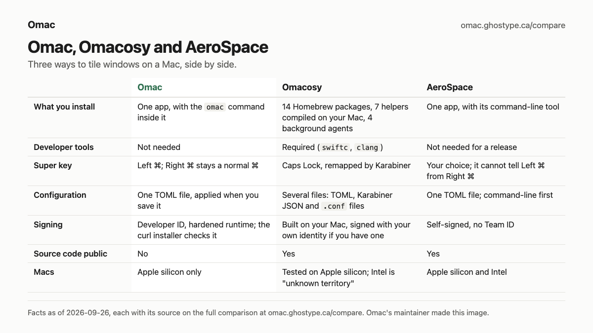

Omac
Keyboard-driven tiling for macOS that works with Omarchy's keybindings.
One app. Nothing else to install.
A tiling window manager for macOS. Your windows arrange themselves side by side instead of piling up, and you move between them with the keyboard.
For people whose fingers know Omarchy and who also work on a Mac, and for anyone who would rather tile windows from the keyboard than drag them.
Omac is in private beta
Public downloads open with the first release. Until then there is nothing to install from this site or from GitHub.
To follow along, watch Omac's GitHub repository for its releases (Watch → Custom → Releases), or come back to this site.
Why Omac
-
The keys you already know
Omarchy's keybindings, all four layers of them, on Left ⌘; the few that macOS already uses move to another chord. Right ⌘ stays a normal ⌘, so ⌘C, ⌘S and ⌘Tab are untouched. Left ⌘ K shows every shortcut.
-
Windows that tile themselves
Each new window splits the space of the one you are in, or joins a scrolling row of columns. Ten workspaces across your displays, and Omac follows when you plug one in.
-
One app, nothing else
No Homebrew, no developer tools, no change to System Integrity Protection. Signed with a Developer ID and notarized by Apple.
-
The everyday tools inside
Omarchy's 22 colour themes, clipboard history, a command palette, reminders, and text read off the screen, each on a key.
Omac never sends anything without asking: your settings, your windows and your clipboard history stay on your Mac. The privacy policy lists every connection Omac can make.
Compared
